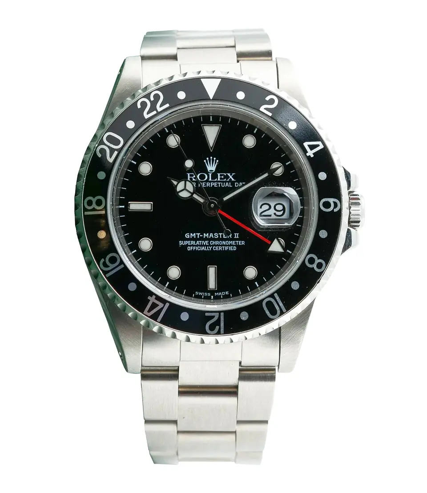
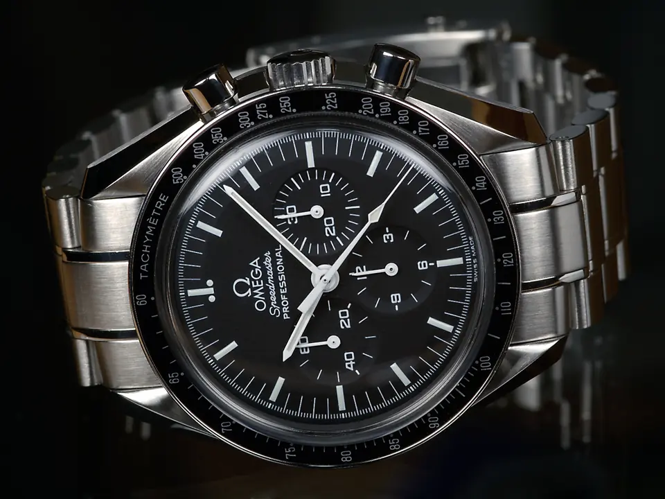
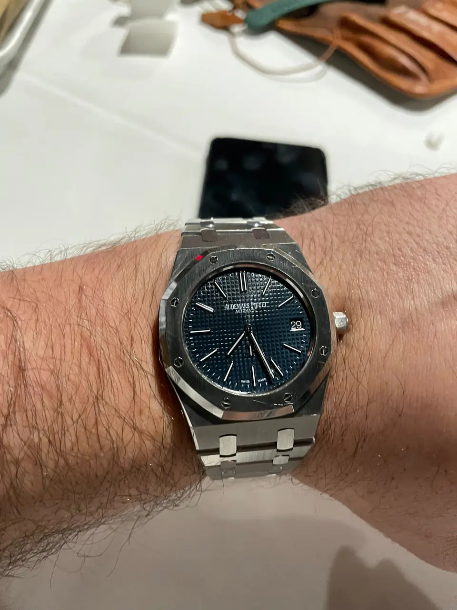
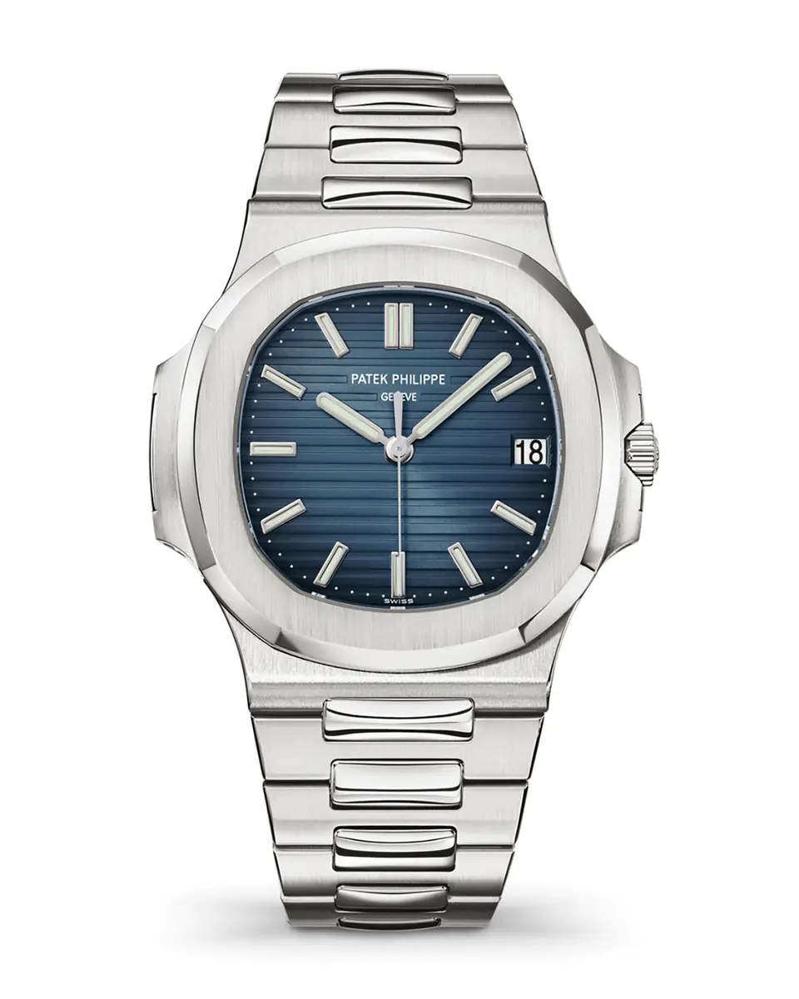

Lookbook · Autumn and winter
15 pieces, shown slowly.
Watches in the salon can be seen by appointment, with prices given privately, in writing, before you visit. Jewels marked as reference pieces are museum and exhibition pieces, shown for the standard we source to.
Chapter I
Steel, Quietly
Sport watches without the noise. Original dials, honest cases, and bracelets that still close the way they did on the first day.

Rolex · c. 1980
The first Submariner Date with a sapphire crystal, on its early matte dial.
The 16800 arrived around 1979 and quietly modernised the Submariner: a sapphire crystal in place of acrylic, a quickset date, and water resistance raised to 300 metres. Early examples kept the matte black dial and painted tritium markers of the reference before it.
Ref. 16800Available to view
Request to view the Submariner DateThe full story of the Submariner Date

Rolex · 1989–2007
Three time zones, read at a glance, on a black bezel.
The 16710 was made from 1989 to 2007 and is the GMT-Master II many collectors consider the purest: a 40 mm steel Oyster case, an independently set hour hand, and a 24-hour bezel that lets one watch keep three time zones.
Ref. 16710Available to view
Request to view the GMT-Master IIThe full story of the GMT-Master II



Patek Philippe · 2006–2021
The blue gradient dial, horizontally embossed, in a 40 mm steel case.
Gérald Genta drew the Nautilus in 1976 after the porthole of an ocean liner. The 5711/1A replaced the 3800 in 2006 and became the most sought-after steel watch of its time before Patek Philippe retired it in 2021.
Ref. 5711/1A-010Reserved
Ask to be told if it returns the NautilusThe full story of the Nautilus
Chapter II
Dress Hours
Watches from the decades when a watch was made to be worn under a cuff and noticed only by the person wearing it.
Chapter III
Light, Held
Diamonds and platinum from the Jazz Age, when New York and Paris jewelers built pieces that moved like light.

Oscar Heyman & Brothers · Jazz Age
Made on the streets around ours, by the brothers who taught New York to set platinum.
Oscar and Nathan Heyman apprenticed with an uncle in Kharkov who supplied Fabergé. In New York Oscar first worked for Pierre Cartier, and in 1912 the brothers founded Oscar Heyman & Brothers, making pieces for Cartier, Van Cleef & Arpels, and Shreve, Crump & Low before selling under their own name.
New YorkReference piece
Ask us to find one like it the Asymmetrical BraceletThe full story of the Asymmetrical Bracelet


Van Cleef & Arpels · 1927
A chatelaine of platinum, diamonds, and pearls, with a watch hidden in the drop.
Van Cleef & Arpels won the grand prize at the 1925 Paris exposition that gave Art Deco its name. Two years later the house made this pendant in platinum, diamonds, and pearls, after the form of a chatelaine, the chains once worn at the belt to carry keys.
1927Reference piece
Ask us to find one like it the Pendant WatchThe full story of the Pendant Watch
Chapter IV
Colour, Considered
Sapphire, emerald, and ruby at their most celebrated. Shown here as references for the calibre of colour we look for.
Not every piece is shown here.
Some are offered only to the private client list, or in the room. Tell us what you are looking for and we will tell you honestly whether we have it.
Request a private appointment